General Setting provides personalized customization for appearance, language, hot key, history information and log handling.
�� General
Whether show welcome page when tool startup can be configured by changing state of ��General�� -> ��Show Welcome page when startup��.
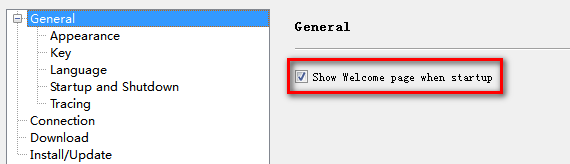
�� Appearance
�� Themes offered
Tool appearance can be changed by select different themes use ��General��->��Appearance�� -> ��Theme��.
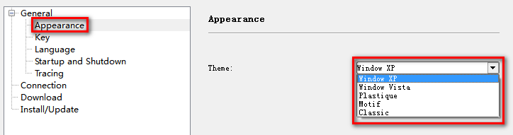
�� Key
Hot Key can be configured in ��General��->��Key��.
Select operation and fill in new hot key information under the hot key table, then press other row in hot key table, and new information will be applied.
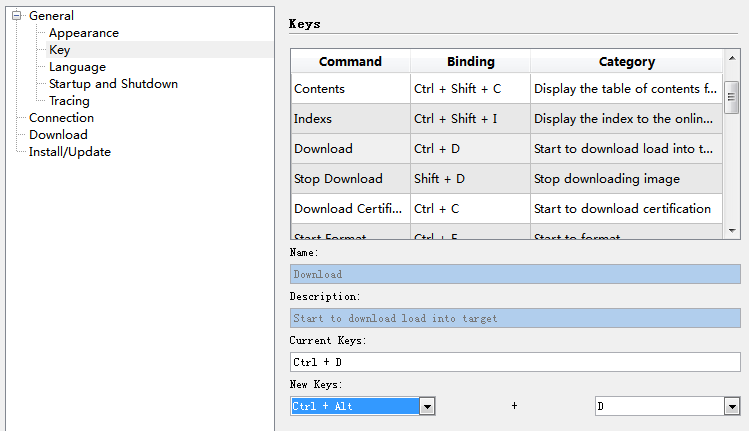
�� Language
Language can be configured in ��General��->��Language��.
Up to now, English, Simplified Chinese and Traditional Chinese are available.
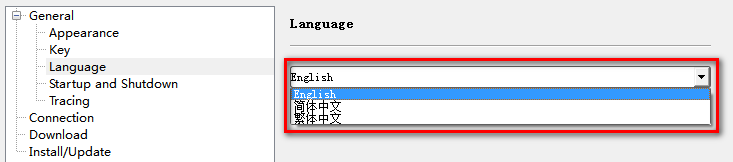
�� Startup and Shutdown
Used to configure whether save the last tool settings.
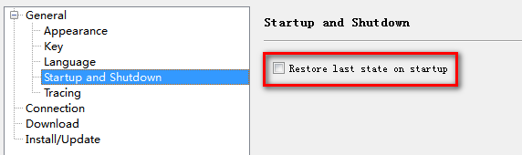
�� Tracing
Configure options relative with logs.
�� Enable/Disable Log
Press Ctrl + Alt +M to enter or exit ��Runtime Tracing Mode�� or change the state of ��General��->��Tracing��->��Enabling tracing��.
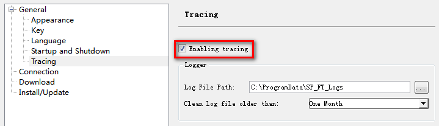
�� Configure log information
1. Log File Path
Press the "..." button to select log path .
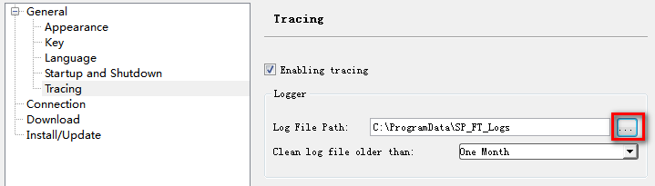
You can select a new log file path to store the log files generated next time the SP Flash Tool starts.
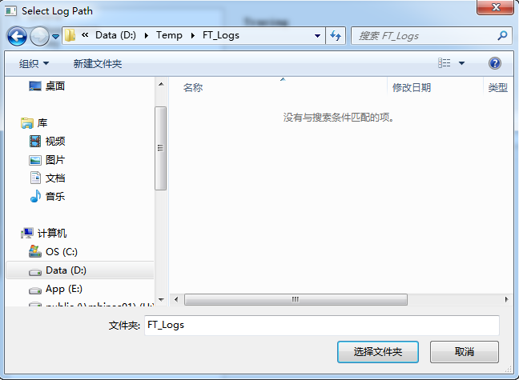
After Log File Path Selected, the selected log path will be shown on the tracing page, and the log path will take effect next time the SP Flash Tool starts.
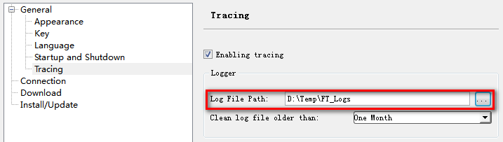
2. Log Files Clean
The SP Flash Tool offers four period: One Day, One Week, One Month and Three Month. The log files before the selected period will be clean automatically.
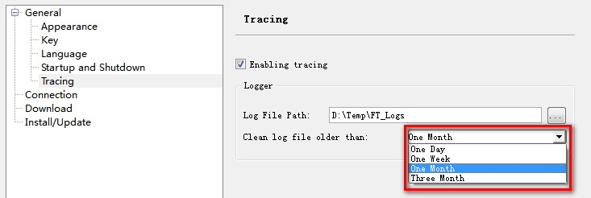
3. DA Log Level
The SP Flash Tool offers da log level setting section, used to configure tracing log level. Trace, Debug, Info, Warning, Error, Fatal are available.
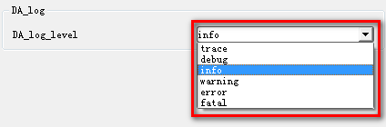